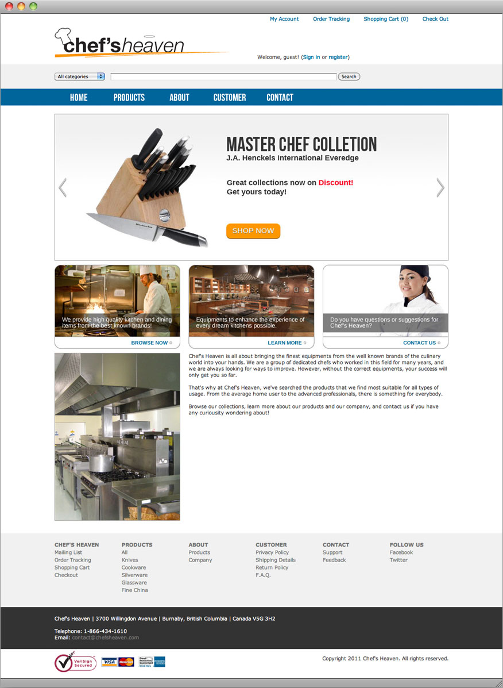
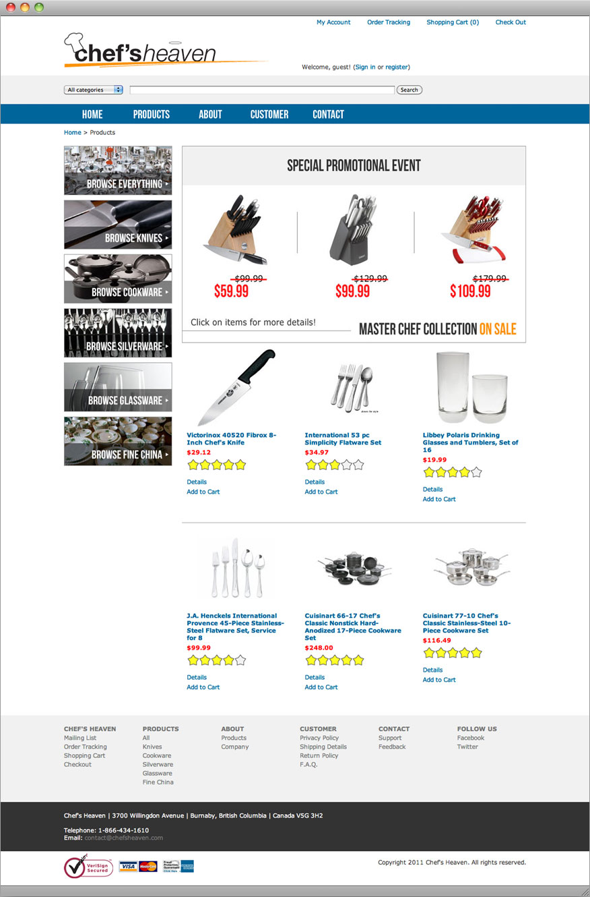
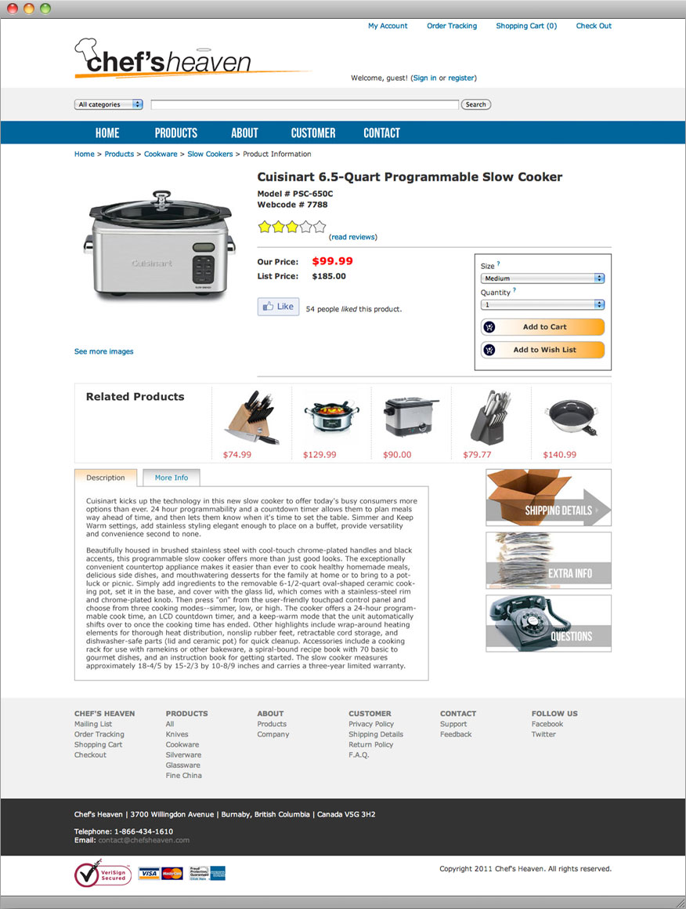
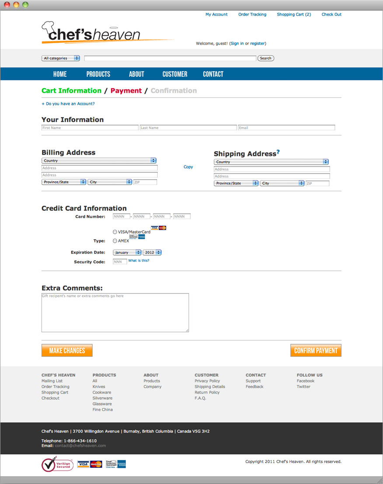

Chef's Heaven
Chef's Heaven is a fictional company targeted for chefs and culinary enthusiasts. This project was to utilizie Information Architecture and usability testing for an eCommerce site by starting with low-fidelity wireframe to a functional high-fidelity website.
Back to Showcase




Back to Showcase